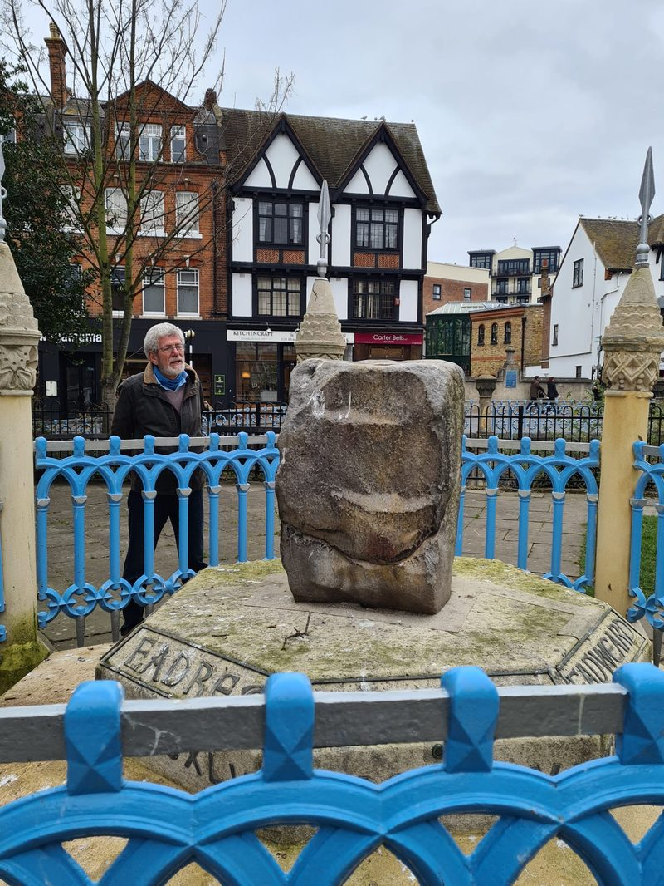

Æthelflæd, Lady of the Mercians may have been written out of history, but today we can find evidence of her life and achievements in many places.
My new book, King Alfred's Daughter, begins with the death of Alfred the Great, and the succession of his son Edward. The relationship between Edward and Æthelflæd is crucial to the plot, and this is epitomised during Edward's coronation at Kingston upon Thames. Here, on 8th June, 900AD. Edward, was crowned as 'King of the Anglo-Saxons.'
In an open space near the centre of Kingston, you can see a relic that formed part of the ceremony: a large stone, possibly part of the throne on which the king sat. The Coronation Stone, as it is now called, is made of sarsen, a type of sandstone not found locally. It sits on a granite base engraved with the names of seven kings who were crowned in Kingston between 900 and 978AD.


Why Kingston?
Why was Kingston chosen as the site of a royal coronation, rather than Winchester, the capital of Wessex? Kingston was chosen because it was on the Thames — and the Thames was the dividing line between the Anglo-Saxon kingdoms of Wessex and Mercia. Under Alfred the Great, only these two areas had held out against the Viking invasions, and he had cemented their alliance by marrying his daughter Æthelflæd to the Lord of Mercia, Æthelred. Edward knew that continued cooperation between Wessex and what remained of Mercia was crucial to his survival, so he chose to be crowned as King of all the Anglo-Saxons in a place that connected the two surviving Saxon territories.
How similar was the ceremony to modern coronations?
The Anglo-Saxon coronations followed an 'ordo' that laid out the responsibilities that a king and his people have to each other with oaths and the singing of the Te Deum. A symbolic sceptre and rod were given to the king and a crown placed upon his head. This has formed the basis of such ceremonies for over 1000 years; the coronations of Queen Elizabeth II in 1953 and that of King Charles III on May 6th 2023 would look remarkably similar to observers from the Anglo-Saxon age.
Where was the coronation held?
Edward and his successors were probably crowned in the ancient church of St Mary. When this collapsed in the 18th century, the 'Coronation Stone' was recovered from the ruins of the chapel. In Victorian times, it was placed in the marketplace on a plinth in front of the old Town Hall where the Market House is today, before it was moved to its current position outside the Guildhall. The names of the seven kings believed to have been crowned on the stone are inscribed in the Victorian granite base, with a coin from their reign embedded under each king's name.
After Edward came his son Athelstan who became the first king of all England, building on the success of King Alfred's son and daughter in reconquering the territories held by Viking invaders.
"Plegmund, the Archbishop of Canterbury and Bishop Wærferth emerged from the shadows to welcome the king as he approached the altar. Edward stepped up on a grey stone slab to sit on the highchair. He deliberately arranged his flowing robes around him, and turned to face his audience, his three guards lined up behind him. Plegmund's voice boomed around the colourful tapestries hanging from the walls. 'I present to you, Edward, your undoubted king. Are you willing to do homage and service to him as your king?'"
— Chapter 6, King Alfred's Daughter, David Stokes, 2023